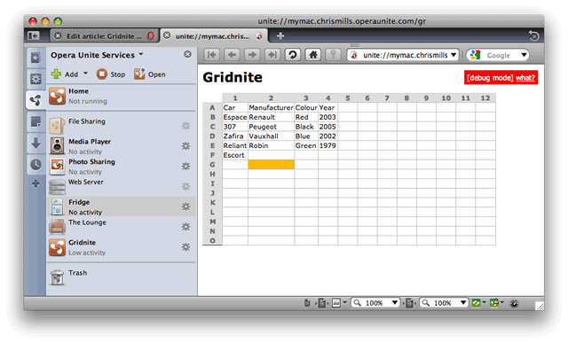

Gridnite - the Unite-powered multiuser spreadsheet application
24th April 2012: Please note
Starting with Opera 12, Opera Unite will be turned off for new users and completely removed in a later release. If you're interested in building addons for Opera, we recommend going with our extensions platform — check out our extensions documentation to get started.
Part 2: developing the formula engine is now available.
Part 3: saving and restoring multiple spreadsheets is also now available.
Introduction
In this tutorial I'm going to show you how to build a simple multi-user spreadsheet service in Opera Unite - this great new technology is, after all, about collaboration, and an ideal use case is locally hosted documents that can be collaborated on by multiple users across the Web.
The example application is called Gridnite, and it bears a definite resemblance to existing online spreadsheet applications, so you may be asking "why reinvent the wheel?". But think about it. Isn't it nice to be able to host your own data? And isn't it nice to be able to continue working on your spreadsheets offline without needing to worry about any conversation between different applications?
This article just looks at getting the bare bones of the service up and running (see Figure 1) - future articles will build on this, adding more advanced features to it. Writing and debugging the basic "Gridnite" app took a few hours to build.
Note: before going any future, download the Gridnite service package so you can install it, and play with the application and its source code while you read the article.
Figure 1: The basic Gridnite service
Welcome to Gridnite!
Generally, in order to write a multi-user application we need to decide on a few things first. The first questions I asked when creating the Gridnite service were as follows:
- How do we store the state?
- How to we plan to propagate real-time updates?
- How do we plan to resolve "conflicts"?
- How do we authenticate users?
- How do we protect against malicious users?
So, time for a few answers. To start with, we're going to use File I/O for state storage, and the data will be stored as JSON.
Second, the real-time updates are handled via AJAX request to the Server (which is Opera Unite, hosting the service). The server will be polled every 5 seconds. The request will include a "since" parameter to indicate to the server the time when we last polled it. The server will look through the "updates" database and return only those that happened in those last 5 seconds.
This is just one strategy. Another one would be to use Comet techniques, but those are outside the scope of this tutorial.
The other questions won't be answered fully in this tutorial, but we will endeavor to look at them in future articles on dev.opera.
The client-side
To clarify, when developing for Opera Unite "server-side" means JavaScript that executes inside the Opera Unite server, where the service is installed. "Client-side" means JavaScript code that is executed in browsers accessing your service. So, our Gridnite's "server-side" JavaScript generates HTML and scripts, and browsers visiting the service execute "client-side" JavaScript.
Since much of the spreadsheet is going to be done in client-side JavaScript, we will start with a simple static static_test.html file and design the basic interface there first. To simplify the client-side development we're going to use the JQuery library.
Since this part has very little to do with Opera Unite, we're going to go through it very quickly. We're going to need a grid (a simple <table> element is ideal), an "edit" field, and AJAX routines to handle the data updates. If you check out the source, you'll see that the grid consists of a <table> with the different cells given attributes for future development: id="CELL_A1", id="CELL_B3", etc. We will use these in future articles to create additional functionality such as a fomula solving engine, copy and paste, etc.
When users of the service click a table cell, the edit field is positioned with "position: absolute;" next to that cell's location and displayed, as shown in Figure 2.
Figure 2: The Gridnite service, showing the edit field.
If the user enters something in the edit field then presses the ENTER key (event.keyCode == 13), an AJAX request is sent to the server to request that the contents of the edit field are copied inside the relevant table cell. With JQuery it's as simple as this:
$.getScript('URL?data='+escape('data'));At this point the server needs to store the data in a local database (which is our JSON-based file). We also need to devise a function that will update a cell and temporarily mark it so that changes are visible for all users (this is "set_cell_value").
I've included the static_test.html file inside the Gridnite service package; it's not actually needed by application - it's just there so that you can follow on with the first step more easily).
The server-side
Now let's move on to the server-side of the application. First of all, let's design a basic schema for our local data storage.
Local data storage
Let's start with a simple object that will map fields to its values:
db = {
A1: 'First cell',
A2: 'Second cell',
};This was good enough to start with - you can access your data by issuing a call of db.A1 or db['A1'] - these are equivalent in JavaScript.
Later on, I discovered that I needed to store updates too. This shows the beauty of JavaScript objects - to allow storage of updates, I just changed the schema as follows:
if('updates' not in db) {
db = {
values: db,
updates: [],
};
};There's actually no schema in JavaScript objects, but you can manipulate them any way you want, adding any new attributes and methods you need). Running the above snippet once and you've moved your database into "db.values" instead of just "db". This shows how to change a working database. Debugging and data loss is not a problem, and you can just change the initialization of the object and be done with it. This is how it looks:
db = {
values:
{
A1: 'First cell',
A2: 'Second cell',
},
updates:
[
[1245785592, 'C2', 'Cell update'],
[1245785595, 'C3', 'Next update'],
],
};Here we've added structure to hold our updates. It's an array of arrays (3-tuple if you will). "1245785593" is called UNIX time - its basically a number of seconds. All you need to know about this number is that it increases by 1 every second. You can get this in JavaScript with a "(new Date()).getTime()/1000" call. We divide it by 1000, because getTime actually returns milliseconds.
How are updates going to work?
"Should we synchronize our watches?" We, certainly, should.
When somebody opens the "Gridnite" service, we generate the output table by iterating over the data from "db.values". We will also send the user's browser a "server time", which is our local "getTime()/1000" result from above. The reason we need to serve local time is time zones. If we trust the "since" parameter supplied by the user's computer (which is his "client-side" getTime()/1000 result), we can get ourselves in a mess: if the user is in a timezone behind our time we will be serving him data from the past, so he will be seeing updates that are hours old. If the user is ahead of our time he won't see any updates at all, because he will be effectively be requesting updates from the future from the server (Opera Unite).
The way to solve this is as follows. We output the current_time variable when we first show the spreadsheet to the user, then with each subsequent request for updates, we update this variable with a new value. During an update, the user's computer sends us the current_time value it received from the "server" last time in the since parameter, and the server sends back the spreadsheet updates along with a new current_time variable.
To do this we use JQuery's $.getScript, which loads data from the server and executes it on the client-side.
At this point the server gets the since parameter and iterates over db.updates to find items that are older than since (the items that need to be updated across the server and clients). To do this we're going to use the JavaScript Array's forEach method:
db.updates.forEach(function(i) {
if(i[0] && i[0]>=r.GET.since) {
r.write('set_cell_value('+safe_js_val(i[1])+', '+safe_js_val(i[2])+');\n');
};
});
function safe_js_val(t) { return "unescape('"+escape(t)+"')"; };
This will output:
set_cell_value(unescape('C3'), unescape('Hello%20World'));
Taking precautions
If you check out the code, you'll see a safe_js_val function - Why do we need this? The answer is data integrity. If the string that inputted into the data entry field contains symbols like ' (apostrophe) or the new line symbol, we could end up with something malicious. For example let's say we have a string that says "Hello'); alert('Test" - our output would end up as this:
set_cell_value('C3', 'Hello'); alert('Test');This is definitely not what we wanted, and you can see how this could lead to malicious code being executed. The correct solution actually would be to use $.getJSON from JQuery and parse the output on the client-side. I've done this in $.getScript to demonstrate the possible malicious use that you need to be on the lookout for. As a side note, the usage of safe_js_val is perfectly safe as long as you don't forget to use it!
Time for action!
Now that we've outlined how the service will work, let's look at actually putting the service together. I'll be using the Uniteness framework to speed things up. This is a framework I created that features a set of shortcuts for many possible occasions and includes a "debug mode" that reloads your scripts to accomodate changes and outputs script errors to your Opera browser (your visitors see "Error happened" without the specific details).
./config.xml
First we need to create ./config.xml:
<widget>
<widgetname>Gridnite</widgetname>
<feature name="http://xmlns.opera.com/fileio">
</feature>
<feature name="http://xmlns.opera.com/webserver">
<param name="type" value="service"/>
<param name="servicepath" value="gridnite"/>
</feature>
</widget>Note that, like above, I will refer to files all other files discussed below by stating their full path - ./config.xml, ./lib/library.js, etc. - so that you can understand where to place them in the package structure.
./config.xml is fairly straightforward; we've specified the title of the application and enabled the webserver and fileio libraries. Pretty much any service you write will need both of those. webserver is used to serve the URLs and fileio is needed to work with local sandboxed filesystem.
./index.html
Now let's look at the ./index.html file:
<script src="lib/template.js"></script>
<script src="lib/uniteness-0.12.js"></script>
<script>
DEBUG = 1;
LOAD_SCRIPT('main.js');
</script>That's it, in it's entirety! Here we simply load up the Markuper template library from ./lib/template.js and my Uniteness framework from ./lib/uniteness-0.12.js. Since those are files that we don't need to debug, we load them via script tags. On the contrary, our ./main.js is what we need to debug, so we load it with a LOAD_SCRIPT command.
./main.js
./main.js will be constantly reloaded during debug (DEBUG = 1) mode so that any changes you make are instantly visible when you Refresh your browser
In this file we first define some URLs:
URLs([
'_index', spreadsheet,
'spreadsheet_update', spreadsheet_update,
'spreadsheet_set_cell', spreadsheet_set_cell,
// 'imgs': 'static',
]);
This allows us to define imgs as static, so that it's available from visitors' browsers as http://device.login.operaunite.com/gridnite/imgs/. The other option is to create a ./public_html directory, the contents of which will be automatically visible at http://device.login.operaunite.com/gridnite/.
spreadsheet, spreadsheet_update and spreadsheet_set_cell are our functions that respond to the URLs http://device.login.operaunite.com/gridnite/, http://device.login.operaunite.com/gridnite/spreadsheet_update and http://device.login.operaunite.com/gridnite/spreadsheet_set_cell respectively.
The _update function will be used when a visitor requests updates after some period of time.
The _set_cell function will be used when a visitor requests that a cell's value be changed (at this point we change the value of db.values and append the update to db.updates so that we can propagate it to other connected clients).
We need a local database too - this is also created in ./main.js. There's a JSON_FILE class my Uniteness library that deals with all the fileio and JSON library calls; so to create the JSON data store, we can just write this:
db = new JSON_FILE('spreadsheet.json', {
values:{},
updates:[],
});
We can now access data as db.store, for example db.store.values.A3 would return A3's value. If you change it, you can then just issue db.save() to dump the database to disk.
Now for the actual functions in the ./main.js file:
function spreadsheet(r) {
template = new Markuper('templates/index.html', {
base: r.uri('/'),
current_time: (new Date()).getTime()/1000,
});Here we initialize the Markuper templating library. We won't be using much of its functionality, but it's still better to have an external HTML template file to edit, rather than mixing everything into ./main.js.
The template called is ./templates/index.html, which is pretty much the same file as the static_test.html, except that I've replaced the 3x3 table with <div id="main_table"></div>. Using Markuper you can issue
template.select('#main_table')[0].innerHTML = "<table></table>";where #main_table can be any CSS selector, and your div contents will be replaced with whatever you specify.
Now we need to construct the actual table. We will use two nested for() loops to build and output the table:
table = '<table><tr><td>';
// Building a table header
for(var j=1;j<20;j++) {
table += '<td class="header">'+j;
};
for(var i=0;i<15;i++) {
// 65 is the code for "A"
A = String.fromCharCode(65+i);
// Drawing left column gray letters
table += '<tr><td class="header">'+A;
for(var j=1;j<20;j++) {
table += '<td class="cell" id="CELL_'+A+j+'">';
table += (A+j in db.store.values) ? db.store.values[A+j] : "";
};
};
table += '</table>';HTML allows us not to close tr and td element, howver, we're using this to keep code cleaner. Basically, we are just replicating what we designed in ./static_test.html
The last step is to write the template into the browser:
r.write(template.parse().html());
// r.write is Uniteness' shortcut;
// Uniteness will also close the connection automatically when function returns
At this point we will devise a spreadsheet_set_cell function that will set the contents of a table's cell, when called via AJAX:
function spreadsheet_set_cell(r) {
if(r.GET.cell_id) {
if (r.GET.cell_id.match(/^[A-Z][0-9]+$/)) {
Even though Opera Unite is very well sandboxed, it's still a good idea to check that input from users is valid (we use a regular expression for that). r.GET.cell_id is Uniteness shortcut for acquiring GET parameters from the query string (we pass these in the url, for example http://.../gridnite/spreadsheet_set_cell?cell_id=A3&value=new_value).
// save the value into the database
db.store.values[r.GET.cell_id] = r.GET.value;
// push(append) a new update "row" for propagation with UNIX time, cell_id and value
// as you remember, we will query this to send "updates" to other connected clients
db.store.updates.push(
[
(new Date()).getTime()/1000,
r.GET.cell_id,
r.GET.value
]
);
Now we use a new JavaScript .filter method to clean out the database of all the entries that are more than half an hour old (since clients request updates every 5 seconds, we don't need to keep update entries that long):
db.store.updates = db.store.updates.filter(
function(i){
return i[0]>((new Date()).getTime()/1000)-1800;
}
);Now all we left to do save the database, as follows:
db.save();The last thing we need is a spreadsheet_update function, which is an AJAX request for the last 5 seconds of updates from the browser:
function spreadsheet_update(r) {
db.store.updates.forEach(function(i) {
if(i[0] && i[0]>=r.GET.since) {
r.write('set_cell_value('+safe_js_val(i[1])+', '+safe_js_val(i[2])+');\n');
};
});
r.write("current_time = "+(new Date()).getTime()/1000+";");
};As discussed above, this writes set_cell_value() out to the client page, and updates the server_time variable on the client.
Summary
And that's it for now. The total time to create this multi-user spreadsheet application is a few hours. Check it out and let us know what you think! We will be adding more functionality to it in future articles, and we'd appreciate your thoughts on functionality you think should be added.
p class=This article is licensed under a Creative Commons Attribution, Non Commercial - Share Alike 2.5 license.
Comments
The forum archive of this article is still available on My Opera.
No new comments accepted.